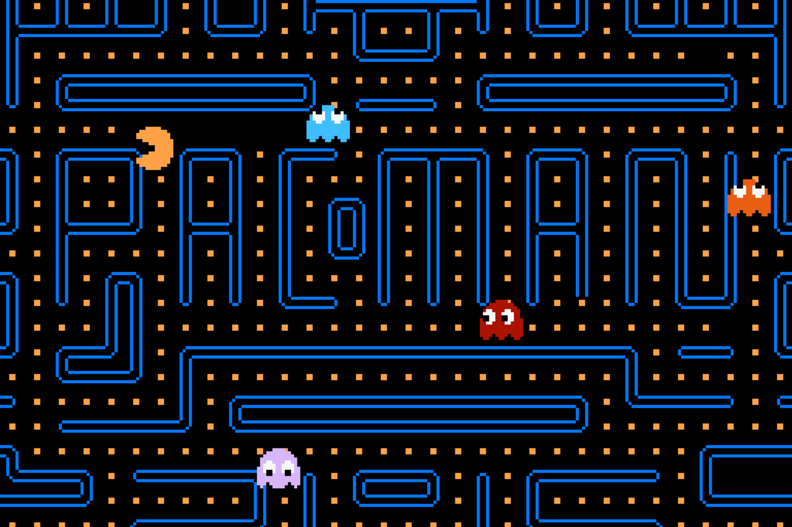

Pac-Man — аркадная видеоигра, разработанная японской компанией Namco и вышедшая в 1980 году. Задача игрока — управляя Пакманом, съесть все точки в лабиринте, избегая встречи с привидениями, которые гоняются за героем. С повышением уровня игры изменяется только её сложность, архитектура лабиринта остаётся идентичной. Всего в игре 256 уровней, последний из которых невозможно завершить из-за ошибки переполнения.
В конце 1970-х из-за успеха игры Space Invaders рынок видеоигр сосредоточился на создании аркадных шутемапов и привлекал к себе сугубо мужскую аудиторию. Сотрудник Namco Тору Иватани хотел сделать игру, которая понравилась бы всем, в особенности девушкам, и в качестве основной темы своей работы выбрал еду.

В Японии созданная игра получила название Puck-Man, но при локализации в США компания Midway изменила название на Pac-Man, считая, что при оригинальном названии дети могли бы закрасить середину буквы «P», превратив её в «F», и сделать слово обсценным.
После выхода в Японии игра была принята хорошо, но не стала популярной. В Америке же аудитория была впечатлена отсутствием в аркаде насильственного мотива, что привлекло в том числе женскую аудиторию и помогло заработать лояльность родителей к видеоигре. Всё это обеспечило популярность Pac-Man среди людей разных возрастов и профессий, породив повышенный интерес к игре и сделав Пакмана первой звездой видеоигр. Такой успех вдохновил разработчиков на создание более разнообразных игр, в том числе с отсутствием насилия.

Благодаря популярности игра портировалась и переиздавалась на множество платформ, среди которых особую известность получила версия Pac-Man для Atari 2600. Из-за своего плохого качества она стала одним из символов кризиса видеоигр 1983 года. Pac-Man дала начало одноимённой серии игр, в которой вышло множество продолжений на различных платформах, включая аркадные автоматы, домашние игровые системы, компьютеры и мобильные телефоны. Помимо этого, вышло множество клонов, подражаний и нелегальных копий игры.
Экран игры занимает собой лабиринт, коридоры которого заполнены точками. Задача игрока — управляя Пакманом, съесть все точки в лабиринте, избегая встречи с привидениями, которые гоняются за героем. В начале каждого уровня призраки находятся в недоступной Пакману прямоугольной комнате в середине уровня, из которой они со временем освобождаются. Если привидение дотронется до Пакмана, то его жизнь теряется, призраки и Пакман возвращаются на исходную позицию, но при этом прогресс собранных точек сохраняется. Если при столкновении с призраком у Пакмана не осталось дополнительных жизней, то игра заканчивается.
После съедения всех точек начинается новый уровень в том же лабиринте. По бокам лабиринта находятся два входа в один туннель, при вхождении в который Пакман и призраки выходят с другой стороны лабиринта.
Всего в лабиринте находятся 240 маленьких точек и 4 большие, известные как энерджайзеры (англ. energizer). За съедение маленькой точки даётся 10 очков, а за съедение энерджайзера — 50. Таким образом, в общей сложности все точки в лабиринте стоят 2600 очков. При съедении Пакманом энерджайзера на ранних уровнях призраки в лабиринте на короткое время входят в режим испуга, резко меняют направление движения и перекрашиваются в синий цвет. За это время Пакман способен съесть призраков посредством столкновения с ними, которое безопасно. От съеденного привидения остаются только глаза, которые возвращаются в центр лабиринта, где призрак вновь оживает и отправляется в погоню за Пакманом.
За съедение первого призрака после получения энерджайзера даётся 200 очков. За съедение каждого следующего привидения при эффекте того же энерджайзера даётся в два раза больше: 400, 800 и 1600 соответственно. Таким образом, при съедении всех призраков после каждого эффекта энерджайзера игрок может заработать за один уровень 12 000 очков. Однако с 19-го уровня призраки перестают быть синими и больше не могут быть съедены.
На каждом уровне в месте ниже зоны призраков дважды за раунд появляются бонусы, называемые фруктами. Первый фрукт появляется после съедения Пакманом 70 точек, второй — после съедения 170. За съедение бонуса даётся от 100 до 5000 очков в зависимости от того, какого уровня достиг игрок. Бонус находится на экране примерно 9 секунд, после чего исчезает. Фрукты, съеденные на текущем и на шести последних пройденных уровнях, отображаются под лабиринтом внизу экрана.
До 21-го уровня скорость Пакмана при обычном движении выше скорости призраков, но с 21-го призраки в режиме погони двигаются быстрее главного героя. Поедание точек замедляет Пакмана примерно на 10 % от его скорости, что позволяет призракам на всех уровнях догнать героя. После съедения энерджайзера, пока призраки напуганы, скорость Пакмана увеличивается, а движение призраков замедляется. С 5 по 20 уровень Пакман и без того двигается с максимальной скоростью, и при съедении энерджайзера он не становится быстрее. Когда призраки проходят через боковой туннель, то их скорость уменьшается почти наполовину.

Пакман и призраки появляются в трёх юмористических анимационных заставках между уровнями, в так называемых антрактах. Они добавлены в игру как награда за прохождение и для того, чтобы дать игроку отдохнуть. В аркаде присутствует режим на двух игроков, для чего автомат был оснащён двумя монетоприёмниками. В этом режиме игроки играют по очереди, соревнуясь в наборе очков. Очередь переходит к другому игроку при потере предыдущим жизни.
Призраки имеют три разные запрограммированные модели поведения: преследование, рассеивание и испуг. Для движения призраков в первых двух режимах игра использует разделение игрового экрана на квадраты. В аркадной версии один такой квадрат имеет размер 8 × 8 пикселей при разрешении экрана 224 × 288. В режимах рассеивания и преследования у призраков есть определённый квадрат, который они пытаются достичь. При рассеивании привидения стремятся к квадратам, которые находятся за пределами лабиринта ближе к его углам. Например, красный призрак стремится к правому верхнему углу. В режиме испуга призраки не имеют целевой точки и выбирают поворот в лабиринте при помощи генератора псевдослучайных чисел. Расчёт целевой точки при преследовании исключителен для каждого призрака, что придаёт им уникальное поведение:
Красный призрак Шэдоу по прозвищу Блинки. Оригинальное японское имя — Оикакэ, прозвище — Акабэй. В режиме преследования использует как цель ту клетку, в которой находится Пакман. Блинки, в отличие от других привидений, увеличивает свою скорость преследования относительно первоначальной дважды за уровень в зависимости от количества съеденных точек. Если точек осталось мало, то он меняет целевую клетку в режиме рассеивания на квадрат, в котором находится Пакман, и так гоняется за героем в двух режимах. Подобное «агрессивное» поведение призрака игроки прозвали «круизом Элроя».
Розовый призрак Спиди по прозвищу Пинки. Оригинальное японское имя — Матибусэ, прозвище — Пинки. В качестве цели при преследовании использует точку, находящуюся на четыре клетки впереди Пакмана. Однако из-за ошибки переполнения при движении Пакмана вверх Пинки использует в качестве цели квадрат, находящийся на четыре клетки вверх и на четыре влево от Пакмана.
Голубой призрак Башфул по прозвищу Инки. Оригинальное японское имя — Кимагурэ, прозвище — Аосукэ. Использует самый сложный алгоритм преследования: для определения направления движения строится отрезок, один из концов которого определяется положением Блинки, а середина находится на 2 клетки перед Пакманом. Второй конец отрезка — искомая целевая точка. Получившуюся точку сложно предсказать, поэтому Инки считается самым опасным привидением. Из-за ошибки переполнения, аналогичной в поведении Пинки, во время движения Пакмана вверх целевая клетка Инки это две клетки вверх и две влево от Пакмана.
Оранжевый призрак Поки по прозвищу Клайд. Оригинальное японское имя — Отобокэ, прозвище — Гудзута. Если Клайд находится дальше 8 клеток от Пакмана, то он использует в качестве цели самого Пакмана, как Блинки. Если же Пакман ближе 8 клеток, то Клайд стремится к левому нижнему углу, как при рассеивании.
Пока призраки находятся в одном из режимов, сменить направление движения они могут только во время поворота в лабиринте, но в момент смены одного режима на другой привидения способны сменить направление движения на противоположное. Исключение составляет переход от испуга к другим режимам. Из закрытой зоны в начале уровня призраки выбираются, находясь в режиме рассеивания, позже сменяя его на преследование. Затем в течение раунда привидения могут начать рассеиваться ещё три раза. При потере Пакманом жизни счётчик рассеивания сбрасывается. В зависимости от уровня время этого режима может длиться от 1⁄60 до 7 секунд. Время преследования до следующего рассеивания может продолжаться на разных уровнях от 30 до 1037 секунд. Когда все четыре рассеивания истекают, призраки преследуют Пакмана без остановки. Если призраки испуганы, таймер других режимов приостанавливается.
Единственный призрак, который в начале каждого уровня или после потери Пакманом жизни стартует сразу вне зоны призраков, — Блинки. За ним в строгом порядке выходят Пинки, затем Инки и последним Клайд. В течение первых трёх уровней привидения выходят после съедения Пакманом определённого количества точек. Например, на первом уровне Пинки покидает зону после 30 точек, а Инки после 60-ти. После потери Пакманом жизни этот счётчик сбрасывается и запускается новый, но с меньшим количеством точек. С четвёртого уровня и до конца игры все призраки сразу покидают зону после старта уровня. Есть также таймер, который позволяет призракам покинуть свою зону, если Пакман определённое время не ест точки. Например, если на первом уровне Пакман, не съев 30 точек, застынет на месте, Пинки отправится в погоню за ним через четыре секунды после этого. Каждая съеденная точка сбрасывает этот таймер до нуля.
Еще если поднять палочку по середине в логотипе LG, то получится Pacman